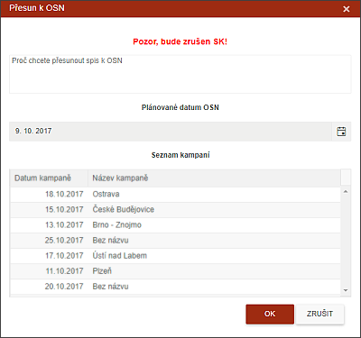

Přesun k OSN
Uživatel má možnost z vážných důvodů přesunout spis ze záložky DOHODA/SK na záložku OSOBNÍ NÁVŠTĚVY.
V dialogu je uživatel upozorněn na podmínku, že v takovémto případě bude Splátkový kalendář zrušen.
Pro uskutečnění této akce musí uživatel zadat důvod přesunu a musí naplánovat nové datum osobní návštěvy. Bez naplánování data není možné tento proces dokončit. Plánování data OSN je možné buď dle kalendáře, nebo pomocí již vytvořených kampaní.
